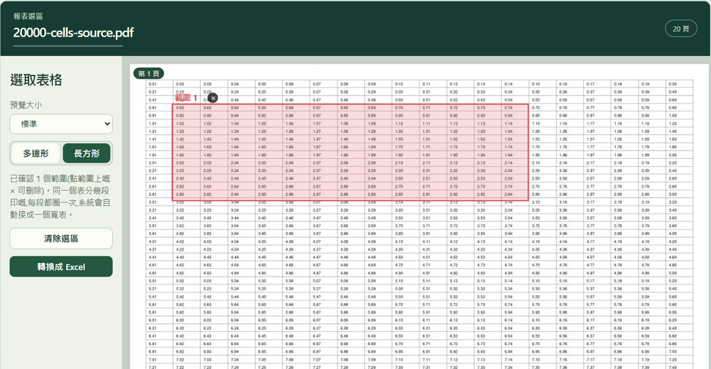

← 全部作品／ 文件資料

交付成果16 小時 → 30 分鐘
ENGINEERING NOTES
我怎樣做
工程師已用於 30 多份文件。約 20,000 格的個案由兩個工作天縮至半小時，約省 96.9% 工時。
辨認表格
先讀 PDF 文字層及座標，按需要由 OpenCV 分析格線，再處理難辨字形。
保留數值
Python 重建列欄，把可計算的數字寫回正確格位；疑點保留給人核對。
回歸驗收
改規則後用標準答案逐格比較。你可下載原程式輸出，在瀏覽器重跑兩萬格驗收。
- PyMuPDF
- OpenCV
- RapidOCR
- openpyxl
INTERACTIVE
親手試用


查看全部 20 頁及覆核測試
合成表共 20,000 格，文字層與指定選區測試全部吻合。

原 PDF 第 1 頁。切換頁數可對照相同頁的 Excel 輸出。
第 1 頁・A10.01
點選儲存格查看位置及實際數值，橫向捲動可看全部 20 欄。
遇到疑點，怎樣處理？
欄名疑點覆核
合成例子：影像辨識讀出 Mx-x，但這類欄名的 x／y 容易混淆。原程式保留讀值，交人回看原圖。
- 觸發：影像讀值符合容易混淆的欄名規則。
- Python：
needs_review標記待人覆核，不猜成另一個欄名。 - 修正：人回看來源及欄位關係，確認後才修改或保留。
原函數已用三個合成儲存格測試。此互動展示已儲存的判斷，沒有即時執行 OCR。查看測試紀錄 ↗
PDF 還原 Excel
交付前，逐格驗收
一張表看起來完整，仍可能有數字被存成文字，或落在隔壁一欄。我用有標準答案的測試表，把輸出的格位、資料型別和數值逐一比對。
你可以在瀏覽器讀取原程式匯出的 Excel，重跑這項檢查。
下載同一份 Excel ↓工作簿驗收合成測試資料
20,000 格
20 頁 × 50 行 × 20 欄
按下核對後，逐頁檢查 Excel。
原轉換測試紀錄 ↗ 測試範圍為已指定選區的文字型 PDF。掃描件及 OCR 需另行驗證。